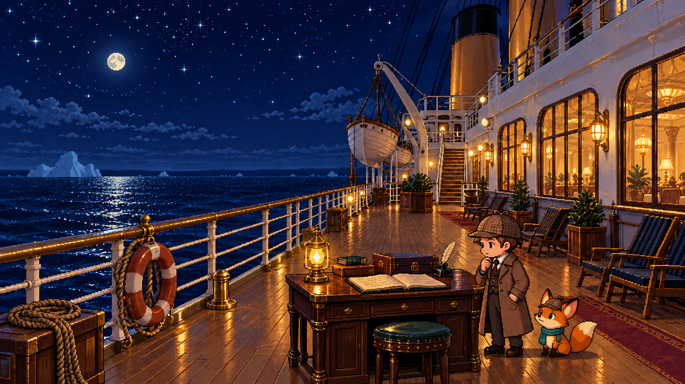

✦ 0 / 12 발견

PROMPT QUEST / THE FIRST ADVENTURE
타이타닉의 기록,
마지막 승객의 확률.
별빛 갑판에 도착한 당신과 작은 조수 루미.
대화를 나누고, 기록을 펼치며 숨은 단서를 찾아요.
코딩은 몰라도 괜찮아요. 함께 한 걸음씩!
TITANIC / START TO FINISH
0 / 3 이야기 완료오늘 완성할 한 편의 모험
처음이라도 괜찮아요① 이야기를 듣고→② 버튼으로 부탁하고→③ 작은 발견을 모아요
AICE Associate 입문을 위한 학습용 모험입니다. 등장인물과 대화는 창작이며, 분석에는 학습용 가상 기록을 사용합니다.